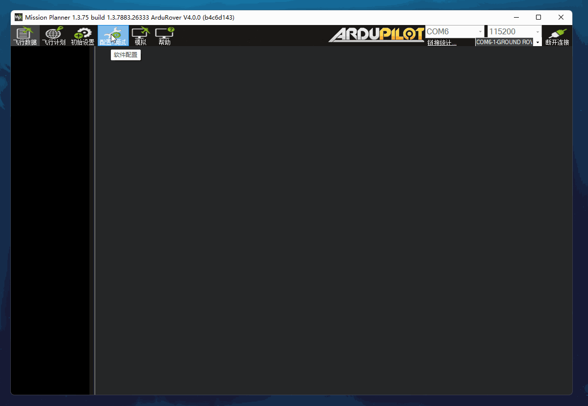

传感器校准
注解
传感器在用户拿到AutoPilot的时候已经完成校准，保证功能正常。 如果非必要，请勿修改！
以下内容可以作为您二次开发的一个例子
传感器的校准需要下载 Mission-Planner 。
Mission Planner介绍
Mission Planner 是一个功能完善的地面站应用程序，仅仅与Windows兼容，暂时不支持Linux系统。主要用于连接飞控，与飞控之间进行通信，并且 实时显示飞控相关数据。点击 这里 可以获取更多有关Mission Planner相关信息。

Mission Planner的顶部工具栏如下
飞行数据： 飞行数据界面内容主要展示无人车飞控相关数据包含GPS数据状态，EKF定位状态，无人车当前模式，解上锁状况，无人车相关数据，地图等
飞行计划： 在该界面可画出无人车的航点，将航点传入到飞控中，修改航点相关的参数，读取飞控的航点等内容。
初始设置： 传感器校准就需要在此界面设置，一般来说，需要校准的传感器为罗盘，加速度计，平面校准等。
注解
某些版本地面站在传感器校准时会发生异常，出现该情况时，请更换地面站版本进行传感器校准。
配置/调试： 查看以及修改飞控的参数。
警告
参数修改需充分了解APM以及Mission Planner相关基础知识，需谨慎使用，修改错误将导致无人车无法正常运行。
飞控固件
R300的飞控固件为阿木实验室定制版本，暂不开源
警告
若非必要， 请勿升级AutoPilot的固件，由升级固件后所导致的AutoPilot功能无法正常使用，请自行解决！
刷入飞控参数
点击 飞控参数 可以下载飞控参数，提取码为 amov
将飞控用USB数据线，一端连接飞控USB端口，一端连接PC（Win7 / Win10 均可）
打开Mission Planner软件
在右上角选择端口号 COMx ，波特率为 115200，点击连接
点击顶部工具栏的 配置—全部参数表—加载—选择下载好的参数—写入参数，如下图所示：

注解
COMx 端口号取决于实际使用情况
飞控参数写入以后，需要重启生效
警告
若非必要， 请勿修改R300飞控参数，如果您修改部分参数后导致R300功能无法正常使用，请自行解决！
警告
在进行传感器校准之前，确保您已经刷入了R300的飞控固件以及飞控参数
加速度计与指南针的校准
在出厂测试时，传感器已经校准过，用户无需校准